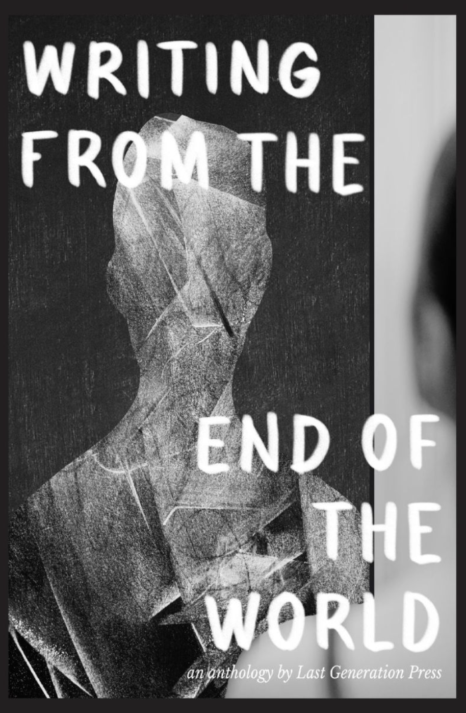

A Few Words
Sienna Wong is a poet from the Bay Area, California. She is obsessed with thrifting, hot tea, and books you can hold in your hands.
Published Work
there is a bubble in my throat.
it tastes like asphyxiation,
and i’m holding my breath because i’m too afraid of losing you in the exhale.